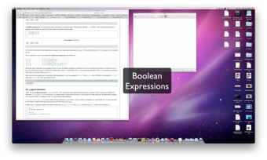
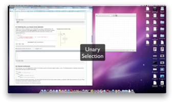
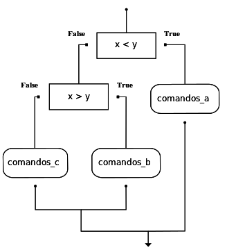
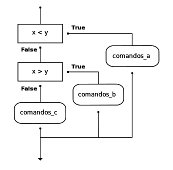

Decisões e Seleção¶
Valores booleanos e expressões booleanas¶
O tipo em Python para armazenar os valores verdadeiro e falso é
chamado de bool, em homenagem ao matemático britânico George
Boole. George Boole criou a Álgebra Booleana, que é a base de toda a
aritmética computacional moderna.
Existem apenas dois valores booleanos. Eles são True e
False. As iniciais maiúsculas são importantes, uma vez que
true e false não são valores booleanos (lembre-se de que
maiúsculas e minúsculas fazem diferença para o Python).
(ch05_1)
Note
Valores booleanos não são strings!
É extremamente importante perceber que True e False não são
strings. Eles não estão entre aspas. Eles são somente dois
valores do tipo de dados bool. Olhe atentamente os tipos
mostrados abaixo.
(ch05_1a)
Uma expressão booleana é uma expressão que resulta em um valor
booleano. O operador de igualdade, ==, compara dois valores e
produz um valor booleano correspondente aos dois valores serem ou não
iguais entre si.
(ch05_2)
No primeiro comando, os dois operandos são iguais, de forma que a
expressão tem valor True. No segundo comando, 5 não é igual a
6, de forma que obtemos False.
O operador == é um dos seis operadores de comparação comuns;
os outros são:
x != y # x não é igual a y
x > y # x é maior do que y
x < y # x é menor do que y
x >= y # x é maior ou igual a y
x <= y # x é menor ou igual a y
Embora essas operações sejam provavelmente familiares a você, os
símbolos em Python são diferentes dos símbolos matemáticos.
Um erro comum é usar somente um símbolo de igual (=) em vez de
dois sinais iguais (==). Lembre-se de que = é um operador de
atribuição e o == é um operador de comparação. Também, os operadores
=< ou => não existem.
Note também que um teste de igualdade é simétrico, mas atribuição não
é. Por exemplo, se a == 7 então 7 == a. Mas, em Python, a expressão a = 7
é válida e 7 = a não é. (Você pode explicar por que?)
Rascunho
Teste seu entendimento
6.1.1: Quais das seguintes é uma expressão booleana? Selecione todos que são.
Operadores lógicos¶
Existem três operadores lógicos: and, or e not. A
semântica (significado) desses operadores é similar ao significado
deles em português.
Por exemplo, x > 0 and x < 10 é verdadeiro somente se x é
maior do que 0 e ao mesmo tempo, x é menor do que 10. Como você
descreveria isso em palavras? Você diria que x está entre 0 e 10, não
incluindo as extremidades.
n % 2 == 0 or n % 3 == 0 é verdadeiro se uma das condições é verdadeira,
isto é, se o número é divisível por 2 ou divisível por 3. Neste
caso, uma, ou a outra, ou ambos as partes tem que ser verdadeira para o
resultado ser verdadeiro.
Finalmente, o operador not nega uma expressão booleana, de forma
que not x > y é verdadeiro se x > y é falso, isto é, se x
é menor ou igual a y.
(chp05_3)
Erro comum!
Existe um erro muito comum que ocorre quando programadores tentam escrever expressões booleanas. Por exemplo, suponha que queremos verificar se uma variável número tem valor 5, 6, or 7. Em palavras, podemos dizer: “número é igual a 5 ou 6 ou 7”. Entretanto, se traduzimos isto em Python, número == 5 or 6 or 7, isso não será correto. O operador or precisa juntar a verificação das três igualdades. A forma correta de escrever isto é número == 5 or número == 6 or número == 7. Isto pode parecer como um monte de digitação mas é absolutamente necessário. Não dá para fazer de forma mais compacta.
Rascunho
Teste seu entendimento
6.2.1: Qual é a expressão correta em Python para verificar se um número armazenado na variável x está entre 0 e 5.
Precedência de operadores¶
Adicionamos um certo número de operadores àqueles que aprendemos nos capítulos anteriores. É importante entender como os operadores se relacionam entre si em relação à precedência. Python sempre usará os operadores aritméticos primeiro (exponenciação primeiro, depois multiplicação/divisão e depois adição/subtração). Depois vêm os operadores relacionais. Finalmente, os operadores lógicos vêm por último. Isto quer dizer que o valor da expressão x*5 >= 10 and y-6 <= 20 será determinado de forma que as operações aritméticas são feitas e depois as relações. O and será deixado por último. Embora muitos programadores poderiam colocar parentêses nas expressões relacionais, isto não é necessário.
A tabela seguinte resume a precedência dos operadores em Python do maior ao menor. A tabela completa da linguagem pode ser encontrada em Python Documentation.
| Nível | Categoria | Operadores |
|---|---|---|
| 7(alto) | exponenciação | ** |
| 6 | multiplicação | *,/,//,% |
| 5 | adição | +,- |
| 4 | relacional | ==,!=,<=,>=,>,< |
| 3 | lógico | not |
| 2 | lógico | and |
| 1(baixo) | lógico | or |
Rascunho
Teste seu entendimento
6.3.1: Quais das seguintes expressões corresponde, usando parênteses, à seguinte expressão: 5*3 > 10 and 4+6==11
Execução condicional: seleção binária¶

Com a finalidade de escrever programas úteis, quase sempre temos a necessidade de verificar condições e alterar o comportamento do programa de acordo com os resultados das condições. Comandos de seleção, algumas vezes também denominados de comandos condicionais nos dá essa habilidade. A forma mais simples de seleção é o comando if. Ele é algumas vezes denominado de seleção binária uma vez que admite dois possíveis caminhos de execução.
(ch05_4)
A sintaxe de um comando if se parece com:
if EXPRESSÃO BOOLEANA:
COMANDOS_1 # executados se condição tem valor True
else:
COMANDOS_2 # executados se condição tem valor False
A expressão booleana depois do if é chamada de condição.
Se é verdadeira, então os comandos tabulados (COMANDOS_1) são executados. Se não,
então os comandos tabulados depois do else são executados.
Assim como a definição de função do último capítulo e outros comandos
compostos como for, o comando if consiste de uma linha de
cabeçalho e um corpo. A linha de cabeçalho começa com a palavra
if seguida por uma expressão booleana e termina com dois pontos (:).
Os comandos tabulados que seguem é chamado de bloco. O primeiro comando com tabulação diferente marca o fim do bloco.
Cada comando dentro do primeiro bloco de comandos é executado em ordem
se a expressão booleana tem valor True. Todo o primeiro bloco de
comandos é pulado se a expressão booleana tem valor False e todos
os comandos sob o else são executados.
Não há limite no número de comandos que podem aparecer nos dois blocos
de um comando if, mas tem que haver pelo menos um comando em cada
bloco.
Lab
- Simulação para Approximar Pi Neste exercício de laboratório trabalhamos um problema de aproximar o valor de pi usando números aleatórios.
Rascunho
Teste seu entendimento
6.4.1: Quantos comandos podem aparecer em cada bloco (o do if e o do else) em um comando condicional?
6.4.2: O que o seguinte código imprime (escolha entre as saídas a, b, c ou nada).
if (4 + 5 == 10):
print("VERDADEIRO")
else:
print("FALSO")
a.
VERDADEIROb.
FALSOc.
VERDADEIRO FALSO
6.4.3: O que o seguinte código imprime?
if (4 + 5 == 10):
print("VERDADEIRO")
else:
print("FALSO")
print("VERDADEIRO")
a.
VERDADEIROb.
VERDADEIRO FALSOc.
FALSO VERDADEIROd.
VERDADEIRO FALSO VERDADEIRO
Seleção unária: omissão do else¶

Outra forma do comando if é um no qual o else é totalmente omitido.
Isso cria um mecanismo chamado seleção unária.
Neste caso, quando a condição tem valor True, os comando são executados.
Caso contrário, o fluxo de execução continua no comando depois do if.
(ch05_unaryselection)
O que é impresso quando o valor de `` x`` é negativo? Tente isso.
Rascunho
Teste seu entendimento
6.5.1: O que o seguinte código imprime?
x = -10
if x < 0:
print("O número negativo ", x, " não é válido aqui.")
print("Isto é sempre impresso.")
a.
Isto é sempre impresso.b.
O número negativo -10 não é válido aqui. Isto é sempre impresso.c.
O número negativo -10 não é válido aqui.
6.5.2: O seguinte código causará um erro?
x = -10
if x < 0:
print("O número negativo ", x, " não é válido aqui.")
else:
print(x, " é um número positivo.")
else:
print("Isto é sempre impresso.")
Condicionais aninhados¶
Um condicional pode também ser aninhado dentro de outro. Por exemplo, assuma que temos duas variáveis inteiras x e y.
O seguinte padrão de seleção mostra como podemos decidir como eles são relacionados entre si.
if x < y:
print("x e' menor do que y.")
else:
if x > y:
print("x e' maior do que y.")
else:
print("x e y devem ser iguais.")
O condicional externo tem duas ramificações.
A segunda ramificação (o else externo) contém outro comando if, o qual
tem outras duas ramificações. Aquelas duas ramificações podem também
conter comandos condicionais.
O fluxo de controle pode ser visto nesta ilustração do fluxograma.
Abaixo você encontra um programa completo que define valores para x and y. Execute o programa e veja o resultado. Então mude os valores das variáveis para mudar o fluxo de controle.
(sel2)
Note
Em algumas linguagens de programação, encontrar o if correspondente a um else pode ser um problema. Entretanto, em Python isto não é o caso. O padrão de tabulação nos diz exatamente qual else corresponde a qual if.
Se você está ainda inseguro, aqui vai a mesma seleção do exemplo codelens. Simule passo-a-passo para ver como o print correto é escolhido.
(sel1)
Rascunho
Teste seu entendimento
6.6.1: O seguinte código causará um erro?
x = -10
if x < 0:
print("O número negativo ", x, " não é válido aqui.")
else:
if x > 0:
print(x, " é um número positivo.")
else:
print(x," é 0.")
Condicionais encadeados¶
Python provê uma forma alternativa de escrever seleções aninhadas como as mostradas na seção anterior. Isto é chamado algumas vezes como condicionais encadeadas
if x < y:
print("x e' menor do que y.")
elif x > y:
print("x e' maior do que y.")
else:
print("x e y devem ser iguais.")
O fluxo de controle pode ser desenhado com uma orientação diferente mas o padrão resultante é idêntico ao mostrado acima.
elif é uma abreviação de else if. Novamente, exatamente uma ramificação será
executada. Não há limites no número de elif mas apenas um simples (e opcional)
else final é permitido e precisa ser a última ramificação do comando.
Cada condição é verificada em ordem. Se a primeira é falsa, a próxima é então verificada , e assim por dianta. Se uma delas é verdadeira, a ramificação correspondente é executada e o comando termina. Mesmo que mais do que uma condição seja verdadeira, apenas a ramificação da primeira verdadeira é executada.
Aqui vai o mesmo programa usando elif.
(sel4)
Rascunho
Teste seu entendimento
6.7.1: Quais dentre I, II e III abaixo dá o mesmo resultado que o seguinte if aninhado?
# comando if-else aninhado
x = -10
if x < 0:
print("O número negativo ", x, " não é válido aqui.")
else:
if x > 0:
print(x, " é um número positivo.")
else:
print(x, " é 0.")
I.
if x < 0:
print("O número negativo ", x, " não é válido aqui.")
else (x > 0):
print(x, " é um número positivo.")
else:
print(x, " é 0.")
II.
if x < 0:
print("O número negativo ", x, " não é válido aqui.")
elif (x > 0):
print(x, " é um número positivo.")
else:
print(x, " é 0.")
III.
if x < 0:
print("O número negativo ", x, " não é válido aqui.")
if (x > 0):
print(x, " é um número positivo.")
else:
print(x, " é 0.")
6.7.2: O que o seguinte código imprimirá se x = 3, y = 5 e z = 2?
if x < y and x < z:
print ("a")
elif y < x and y < z:
print ("b")
else:
print ("c")
Funções booleanas¶
Funções podem retornar valores booleanos, o que é frequentemente conveniente para esconder dentro de funções testes complidados. Por exemplo:
(ch06_boolfun1)
O nome desta função é eDivisivel. É comum dar nomes a
funções booleanas que lembrem questões sim/não. eDivisivel retorna
ou True ou False para indicar se x é ou não divisível por
y.
Podemos fazer a função mais compacta tirando vantagem do fato que a
condição do comando if é ele próprio uma expressão booleana. Podemos
retorná-lo diretamente, evitando todo o comando if:
def eDivisivel(x, y):
return x % y == 0
Funções booleanas são usadas frequentemente em comandos condicionais:
if eDivisivel(x, y):
... # faça alguma coisa ...
else:
... # faça outra coisa ...
Pode ser tentador escrever algo como
if eDivisivel(x, y) == True:
mas a comparação extra não é necessária. O seguinte exemplo mostra uma aplicação da função eDivisivel.
Teste isto com uns alguns outros argumentos para ver o que é impresso.
(ch06_boolfun2)
Abaixo você encontra mesmo programa em codelens.
(ch06_boolcodelens)
Rascunho
Teste seu entendimento
6.8.1: O que é uma função booleana?
6.8.2: O seguinte comando é legal em Python (assumindo que x, y e z são definidos como números)?
return x + y < z
Glossário¶
- aninhamento
- Uma estrutura de programa dentro de outra, tal como um comando condicional dentro de uma ramificação de um outro comando condicional.
- bloco
- Um grupo de comandos consecutivos com a mesma tabulação.
- comando condicional
- Um comando que controla o fluxo de execução dependendo de
alguma condição. Em Python,
if,elifeelsesão usados para comandos condicionais. - condição
- Uma expressão booleana em um comando condicional que determina a ramificação a ser executada.
- condicional encadeada
- Uma ramificação condicional com mais do que dois fluxos de
execução possíveis. Em Python, condicionais encadeadas são
escritas com comandos
if ... elif ... else. - corpo
- Um bloco de comandos em um comando composto que segue o cabeçalho.
- expressão booleana
- Uma expressão que é ou verdadeira ou falsa.
- função booleana
- Uma função que retorna um valor booleano. O valores possíveis
do tipo
boolsãoFalseeTrue. - operador de comparação
- Um dos operadores que compara dois valores:
==,!=,>,<,>=, and<=. - operador lógico
- Um dos operadores que combinam expressões booleanas:
and,orenot. - operador módulo
- Um operador, denotado por um sinal de porcentagem (
%), que calcula o resto da divisão de um número por outro, considerando que o valor da divisão é um número inteiro. - ramificação
- Um dos possíveis caminhos do fluxo de execução determinado por uma execução condicional.
- valor booleano
- Existem exatamente dois valores booleanos:
TrueeFalse. Valores booleanos são resultados de cálculos de expressões booleanas. Eles são do tipobool.
Exercicíos¶
Qual o valor de cada uma das expressões?
3 == 33 != 33 >= 4not (3 < 4)
Descreva os opostos lógicos de cada uma das condições. Não é permitido usar o operador
not.a > ba >= ba >= 18 and dia == 3a >= 18 and dia != 3
Escreva uma função que, dada uma nota, retorna um string — o grau da nota de acordo com o esquema:
Nota Grau >= 90 A [80-90) B [70-80) C [60-70) D < 60 F Os colchetes e os parênteses denotam intervalos fechados e abertos. Um intervalo fechado inclui o número enquanto um intervalo aberto o exclui. Logo, 79.99999 corresponde a grau C, mas 80 corresponde a grau B.
Seja
xs = [83, 75, 74.9, 70, 69.9, 65, 60, 59.9, 55, 50, 49.9, 45, 44.9, 40, 39.9, 2, 0]Teste sua função imprimindo o grau para cada elemento da lista.
Modifique o programa de diagrama de barras da tartaruga para que as barras, para qualquer valor de 200 ou mais, sejam preenchida com vermelho; para valores entre [100 e 200) sejam preenchidas com amarelo e barras representando valores menores do que 100 sejam preenchidas com verde.
No programa do diagrama de barras da tartaruga, o que você espera acontecer se um ou mais dos valores dados na lista é negativo? Teste isto. Mude o programa de forma que quando ele imprime um texto para barras negativas, esse texto apareça embaixo da barra.
Escreva uma função
acheHipotque, dados os comprimento de dois lados de um triângulo retângulo, retorna o comprimento da hipotenusa. (Dica: o valor dex ** 0.5é a raiz quadrada, ou usesqrtdo módulo matemático)
Escreva uma função chamada
é_par(n)que recebe como argumento um inteiro e retornaTruese o argumento é um número par eFalsese ele é ímpar.
Agora escreva a função
é_ímpar(n)que retornaTruequandoné ímpar eFalsecaso contrário.
Modifique
é_ímparde forma que ela use uma chamada paraé_parpara determinar se o argumento é um inteiro par ou ímpar.
Escreva uma função
é_ânguloretoque, dado o comprimento de três lados de um triângulo, determina se o triângulo é retângulo. Asssuma que o terceiro argumento é sempre o lado maior. Ela retornaTruese é um triângulo retângulo, ouFalsecaso contrário.Dica: aritimética de ponto flutuante não é sempre exatamente precisa, de forma que não é seguro testar números em ponto flutuante para igualdade. Se um bom programador deseja saber se
xé igual ou suficientemente perto dey, ele provavelmente usaria em seu códigoif abs(x-y) < 0.000001: # se x é aproximadamente igual a y ...
Estenda o programa acima de forma que os lados possam ser dados à função em qualquer ordem.
Um ano é bissexto se ele é divisível por 4 a menos que seja um século que não é divisível por 400. Escreva uma função que receba um ano como argumento e retorna
Truese o ano é bissexto eFalsecaso contrário.
Implemente o programa da data da Páscoa descrito em classe.
Rascunho